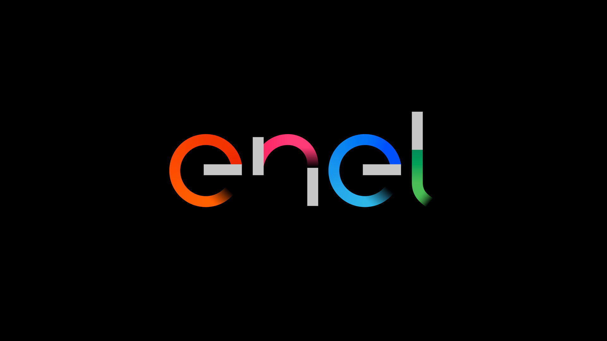
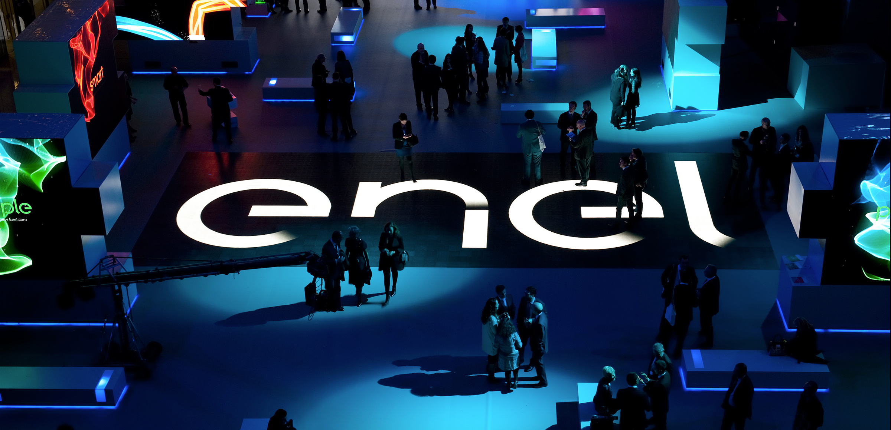

Biomass is a renewable energy source derived from organic matter of plant or animal origin, such as wood, agricultural and forestry residues, food waste, organic refuse, and manure. These materials can be used to produce thermal energy, electricity, or biofuels through processes such as combustion, anaerobic digestion, fermentation, gasification, and pyrolysis. Biomass energy is considered renewable because the carbon emitted during its use is largely offset by the carbon absorbed by plants during their growth, making it potentially carbon-neutral if managed sustainably.

Enel Green Power is an Enel Group company specializing in renewable energy. In Italy and abroad, it manages biomass plants that use organic materials such as agricultural and forestry residues, as well as agro-industrial waste, to produce electricity and heat. The company focuses on sustainable resource management, reducing emissions and repurposing materials that would otherwise become waste.
